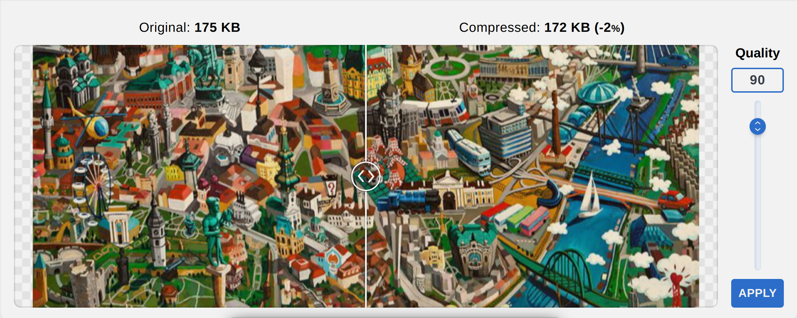
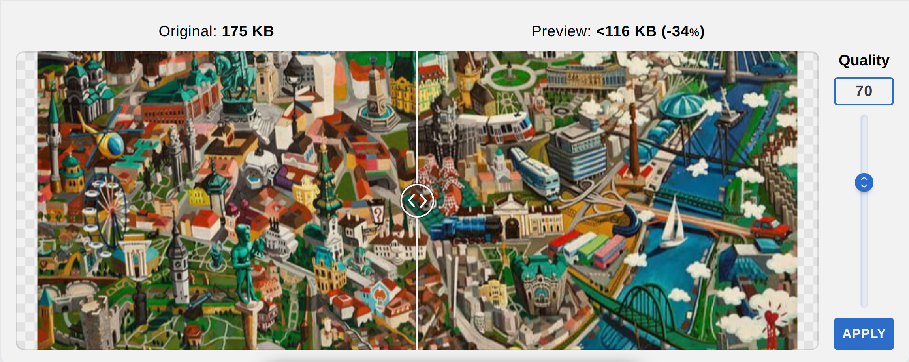
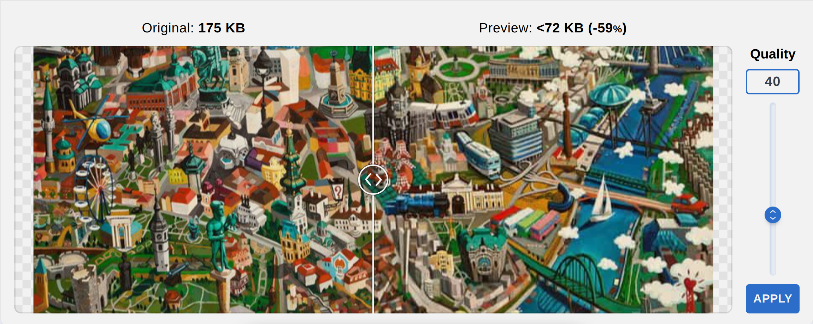
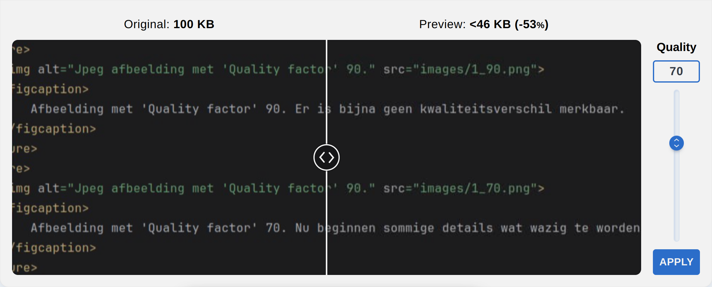
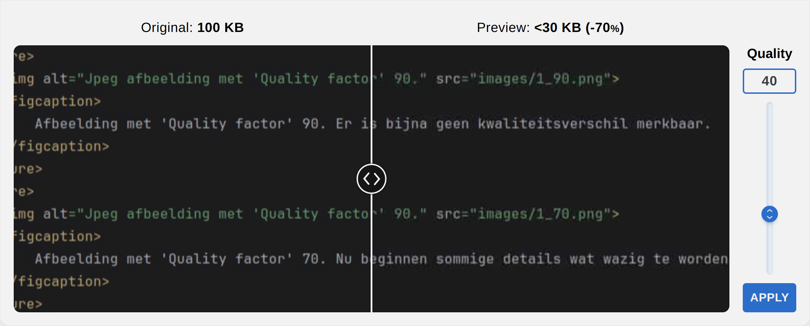

Afbeelding met 'Quality factor' 90. Er is bijna geen kwaliteitsverschil merkbaar.

Afbeelding met 'Quality factor' 70. Nu beginnen sommige details wat wazig te worden.

Afbeelding met 'Quality factor' 40. Nu is de compressie heel zichtbaar, sommige details zijn compleet verloren.

Tekst met 'Quality factor' 70. Bijna geen verschil in de tekst.

Tekst met 'Quality factor' 40. Nu is de compressie zichtbaar maar de tekst blijft enorm goed leesbaar.
Na zelf nog een extra test bij 'Quality factor' 20 kan ik zeggen dat tekst heel goed de Jpeg compressie overleeft.